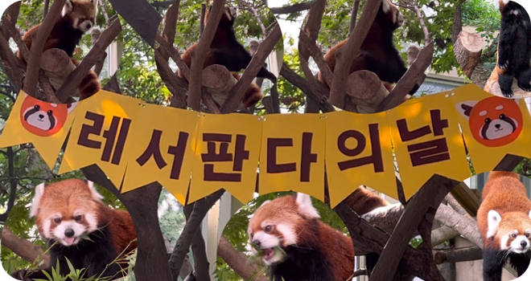
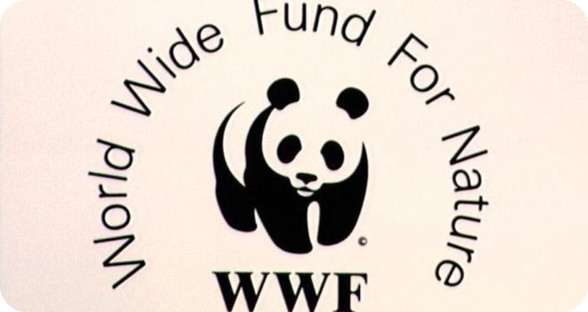

레서판다를 보호할 수 있는 활동은 어떤게 있을까요?

세계 레서판다의 날
매년 9월 셋째 주 토요일은 '국제 레서판다의 날(International Red Panda Day)'로 멸종위기에 처한 레서판다에 대한 보호 의식을 널리 알리기 위해 '레드판다 네트워크'에서 지정한 기념일이에요.
NS 레드 팬더 네트워크
레서판다와 그들의 서식지를 보호하는 비영리 단체에요. 지역 커뮤니티 그룹과 협력하여 야생 동물 회랑을 만들고, 레서판다에 대한 인식을 제고하기 위해 "숲 보호자"를 훈련하고, 보호 지역을 설정하기 위해 마을 사람들과 협력하여 레서판다를 보호합니다.

WWF 세계자연기금
WWF는 중국 정부의 초청으로 중국에서 활동한 최초의 국제 자연보전기관으로 1980년대부터 판다를 보호하기 위해 다양한 활동을 진행하고 있어요. 레서판다가 아닌 자이언트판다이지만 두 동물 다 보호받아야하는 멸종위기 동물이랍니다.